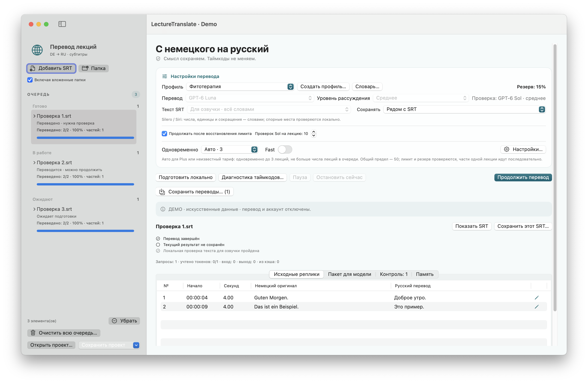

macOS 15+ · Apple Silicon
LectureTranslate
Переводит немецкие SRT-субтитры на русский с сохранением таймкодов, очередью и проверкой черновика.
Выпуск · 3.5.1Перед запускомНужны отдельное подключение и вход во внешний сервис перевода. FFmpeg/ffprobe необязательны для отдельных медиафункций.


Как это работает
- Открыть SRT
- Подключить сервис перевода
- Сохранить перевод SRT
Учебный пример SRT · не результат живого запроса
1
00:00:01,000 --> 00:00:04,000
Guten Morgen. Heute besprechen wir Netzwerke.1
00:00:01,000 --> 00:00:04,000
Доброе утро. Сегодня мы обсуждаем сети.Первые шаги
Распакуйте архив приложения, настройте подключение по руководству и добавьте немецкие .srt. Проверяйте перевод перед использованием.